1. Value Proposition
The investor one-liner: the problem Bender solves, the solution, and the outcome.

2. Component Overview
Core runtime modules, model integrations, storage layers, and reference domain implementations.

3. Cognitive Lifecycle
How a user query flows through capture, retrieval, planning, rules, simulation, fusion, and injection into LLM generation.
4. Coprocessor Architecture
The structural relationship between the LLM, Bender runtime, world models, and grounding signals.

5. Integration Levels
Progressive adoption paths from external API calls through native tokenformer integration.

6. Joint Architecture with RelationalAI
How Bender and RelationalAI can combine semantic world models with relational knowledge graphs.

7. Bender vs. Alternatives
Positioning Bender against RAG, fine-tuning, and agent-only approaches.

8. KAA Inference Loop
The Knowledge-Action-Answer loop for grounded, iterative inference.
